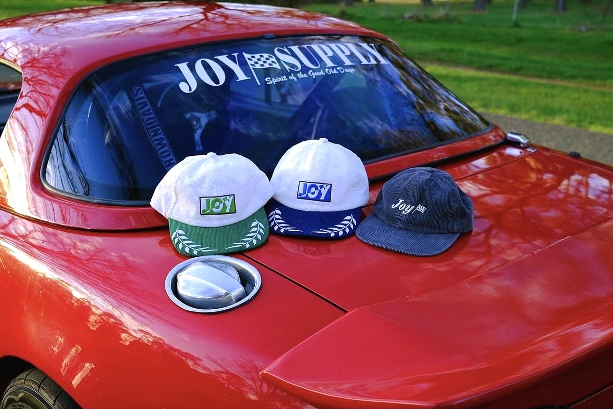

Headwear.
2020-present.
While it may not be an overly involved or complicated design project, it is challenging to make a very good cap that becomes someone's go to hat. These caps were built with the intent of being someone's favorite hat, for example, they always keep in their car.
Over the years I have designed and produced a range of caps that sit within the Joy-Supply apparel and workwear range. I have experimented with various materialities, such as corduroy for vintage appeal and waterproof nylon for technical function, with particular focus on mundane features such as adjuster buckles and eyelets.
More on this project: https://www.instagram.com/p/CY43YgFBJGa/ https://www.instagram.com/p/CTozS7vpaf-/?img_index=1 https://www.instagram.com/p/CTi3N2lnn6_/?img_index=1

Joy-Supply F1 Caps. Corduroy, brass.